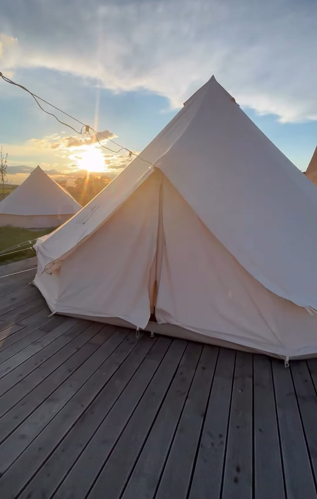
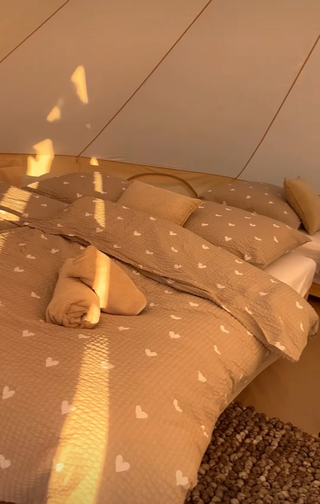

Budeme se brát

Srdečně Vás zveme
- —Dní
- —Hodin
- —Minut
- —Sekund
Harmonogram
- 10:00–10:45
- Příjezd hostů
- 11:00
- Svatební obřad
- 13:00
- Oběd
- 15:00
- Krájení dortu
- 17:30
- Vyplétání kytice
- 18:00
- Raut
- 19:00
- První tanec
…a zábava až do rána
Ztracená stodola
Celý den se odehraje ve Ztracené stodole — od obřadu přes jídlo až po party.
ztracenastodola.cz otevřít v mapách
Parkovat můžete přímo v areálu. Při příjezdu uvidíte svatební stodolu po pravé straně — na parkoviště ale zajeďte doleva.
Pokud budete potřebovat pomoct s dopravou na místo, dejte nám prosím s předstihem vědět. Zkusíme domluvit spolujízdu, nebo vyzvednutí na nádraží v Chocni.
Potvrďte nám svou účast
Dejte nám prosím vědět, jestli dorazíte, nejpozději do 15. 8. 2026. Ve formuláři rovnou vyplňte i případné alergie a stravovací omezení.
Ubytování
Možnosti přespání jsou různé. V areálu Ztracené stodoly bohužel není dostatek místa pro komfortní přespání všech hostů.
Pokud Vám nevadí spát v glampingovém stanu, máme v nabídce cca 20 míst s lůžky a dalších 10 na karimatkách pro větší dobrodruhy. U karimatek prosím počítejte s vlastním spacákem. Přespat se dá i v dodávce, autě, karavanu — zkrátka v čemkoli, co Vás napadne.
Alternativně jsme předjednali kapacitu v blízkém penzionu La Casa — v nabídce jsou dvoulůžkové a čtyřlůžkové pokoje. Pokud byste měli zájem, dejte nám prosím vědět co nejdříve. Případně si ubytování můžete zařídit i po vlastní ose.
Rozvoz na ubytování
Do okolních ubytování (Vysoké Mýto, Choceň) budeme mít zajištěného řidiče. Nic se nerezervuje — řidiče najdete u baru, kdykoli je zrovna na místě, a jede se popořadě, jak kdo dorazí (kdo dřív přijde, ten dřív jede).


Užitečné informace
Kontakty
Před svatbou:
Verča — 774 985 418 (i WhatsApp)
Ondra — 733 258 804
V den svatby: bude doplněno nejpozději den před svatbou
Dress code
Bílá a velmi světlé odstíny jsou tradičně vyhrazené nevěstě. Pokud se budete chtít sladit s tématem svatby, doporučené odstíny jsou tmavě červená, oranžová, béžová a modrá. Rádi ale uvítáme i jiné neutrální barvy.
Dary
Nejvíc oceníme, když si s námi náš významný den naplno užijete. Pokud nás chcete obdarovat, na místě budete mít možnost přispět v hotovosti i přes QR kód.
Počasí
Sledujte prosím předpověď a přejte nám krásný teplý podzimní den. Jde ale o říjnovou svatbu ve stodole, takže je možné, že počasí bude proměnlivé a mokré. Ve stodole má být vytápění, ale pro jistotu si raději vezměte svetr a deštník navíc. Pro děti a dobrodruhy v glampingových stanech to platí dvojnásob.
Děti
Děti jsou vítané. Prosíme rodiče, aby počítali s nevyzpytatelným počasím. A bude super, když s sebou vezmete i nějaké hračky nebo jinou zábavu.